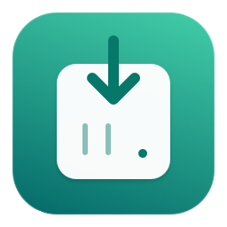

Activez l’extension dans Safari → Réglages → Extensions.
L’extension est activée. Les envois vers le NAS fonctionnent sans ouvrir sa page dans Safari.
L’extension est désactivée. Activez-la dans les réglages Safari.
Ouvrez le bouton de l’extension dans Safari, puis Options de connexion au NAS. Configurez votre compte une seule fois : aucun onglet NAS ni partage SMB n’est ensuite nécessaire.